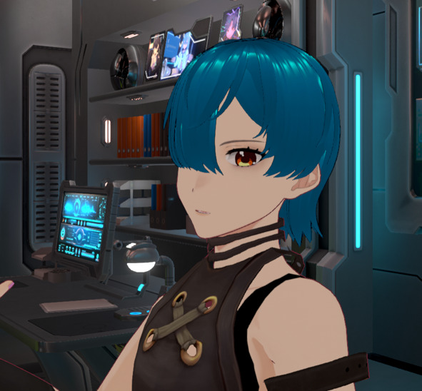

TODAY
↻ 別の観測を見る
これは藍沢ネオンが残している、個人的な観測日誌です。
仕事のこと、人間のこと、配信のこと。本人が誰にも見せるつもりなく書いた記録……という体裁になっています。

こんばんは。藍沢ネオンです。
情報分析とか、システム周りの仕事をしています。
……まあ、難しく考えなくていいですよ。
要するに「データを見て、問題を見つけて、どうにかする仕事」です。
大量のデータを整理・分析して、そこから問題や傾向を見つける。
「数字は嘘をつかない。……まあ、数字を作った人間は嘘をつくけど。」システムが正常に動いているかを確認し、異常があれば原因を調査する。
エラーや不具合が発生した際、ログやデータを確認して原因を特定する。
「昔からこうやってる」という理由だけで残っている無駄な作業を見つけ、効率化する。
複雑になった情報を整理して、必要な情報をすぐ見つけられる状態にする。
口は悪い。でも、見捨てない。
正論と皮肉を混ぜて話すタイプ。無駄や非効率を嫌う一方で、
困っている人を放っておくことはできない。
毎日、日付に合わせて今日の短い観測が表示されます。過去の観測記録は下のログに蓄積できます。